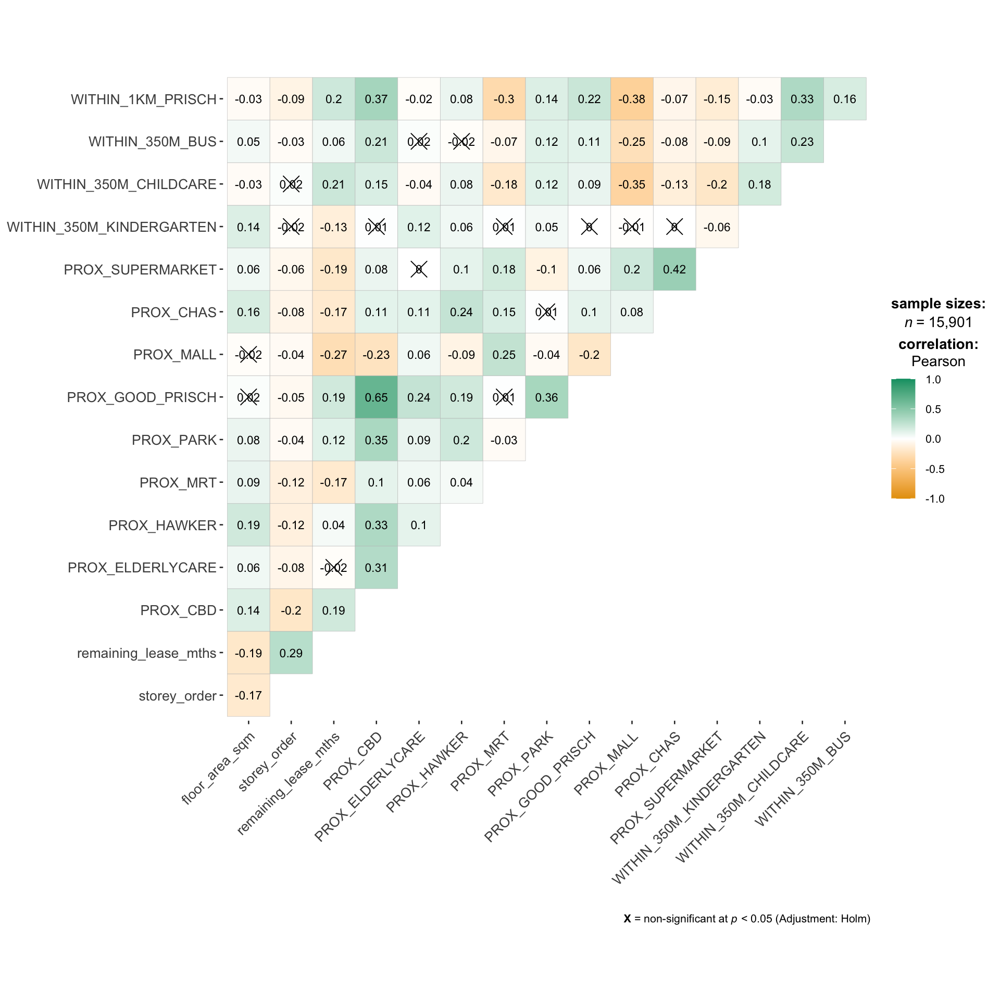

pacman::p_load(sf, spdep, GWmodel, SpatialML,
tmap, rsample, Metrics, tidyverse)Hands-On Exercise 09
Hands-On Exercise
R
sf
GWmodel
SpatialML
Geographically Weighted Predictive Models
Geographical Weighted Predictive Models
1.0 Overview
Predictive modelling uses statistical learning or machine learning techniques to predict outcomes. By and large, the event one wants to predict is in the future. However, a set of known outcome and predictors (also known as variables) will be used to calibrate the predictive models.
Geospatial predictive modelling is conceptually rooted in the principle that the occurrences of events being modeled are limited in distribution. When geographically referenced data are used, occurrences of events are neither uniform nor random in distribution over space. There are geospatial factors (infrastructure, sociocultural, topographic, etc.) that constrain and influence where the locations of events occur. Geospatial predictive modeling attempts to describe those constraints and influences by spatially correlating occurrences of historical geospatial locations with environmental factors that represent those constraints and influences.
1.1 Learning Outcomes
In this in-class exercise, we will explore how to build predictive model by using geographical random forest method. By the end of this hands-on exercise, we will acquire the skills of:
preparing training and test data sets by using appropriate data sampling methods,
calibrating predictive models by using both geospatial statistical learning and machine learning methods,
comparing and selecting the best model for predicting the future outcome,
predicting the future outcomes by using the best model calibrated.
2.0 Importing Packages
Firstly, we will install and import necessary R-packages for this modelling exercise. The R packages needed for this exercise are as follows:
sf for importing, managing and processing vector-based geospatial data in R.
spdep for computing spatial weights, global and local spatial autocorrelation statistics
GWmodelfor modelling and fitting geographically weighted models.
SpatialMLfor applying machine learning methods to spatial data.
tmap which provides functions for plotting cartographic quality static point patterns maps or interactive maps by using leaflet API.
rsample for efficient data splitting and resampling.
Metricsfor calculating common statistical metrics for model validation and performance evaluation.
tidyversefor wrangling attribute data in R
3.0 Importing Datasets to R Environment
In this exercise, the following datasets will be used:
Aspatial dataset:
- HDB Resale data: a list of HDB resale transacted prices in Singapore from Jan 2017 onwards. It is in csv format which can be downloaded from Data.gov.sg.
Geospatial dataset:
- MP14_SUBZONE_WEB_PL: a polygon feature data providing information of URA 2014 Master Plan Planning Subzone boundary data. It is in ESRI shapefile format. This data set was also downloaded from Data.gov.sg
Locational factors with geographic coordinates:
Downloaded from Data.gov.sg.
Eldercare data is a list of eldercare in Singapore. It is in shapefile format.
Hawker Centre data is a list of hawker centres in Singapore. It is in geojson format.
Parks data is a list of parks in Singapore. It is in geojson format.
Supermarket data is a list of supermarkets in Singapore. It is in geojson format.
CHAS clinics data is a list of CHAS clinics in Singapore. It is in geojson format.
Childcare service data is a list of childcare services in Singapore. It is in geojson format.
Kindergartens data is a list of kindergartens in Singapore. It is in geojson format.
Downloaded from Datamall.lta.gov.sg.
MRT data is a list of MRT/LRT stations in Singapore with the station names and codes. It is in shapefile format.
Bus stops data is a list of bus stops in Singapore. It is in shapefile format.
Locational factors without geographic coordinates:
Downloaded from Data.gov.sg.
- Primary school data is extracted from the list on General information of schools from data.gov portal. It is in csv format.
Retrieved/Scraped from other sources
CBD coordinates obtained from Google.
Shopping malls data is a list of Shopping malls in Singapore obtained from Wikipedia.
Good primary schools is a list of primary schools that are ordered in ranking in terms of popularity and this can be found at Local Salary Forum.
4.0 Data Preparation and Wrangling
4.1 Reading data file to rds
First, we will input the dataset to R environment. The dataset is stored as an RDS (R Data Structure) file, a format native to R that preserves the metadata of the original data, making it ideal for storing R objects. We use the read_rds() function from the readr package to read this file. This function is specifically designed to read RDS files and load them into R.
mdata <- read_rds("../data/rds/mdata.rds")mdataSimple feature collection with 15901 features and 17 fields
Geometry type: POINT
Dimension: XY
Bounding box: xmin: 11597.31 ymin: 28217.39 xmax: 42623.63 ymax: 48741.06
Projected CRS: SVY21 / Singapore TM
# A tibble: 15,901 × 18
resale_price floor_area_sqm storey_order remaining_lease_mths PROX_CBD
<dbl> <dbl> <int> <dbl> <dbl>
1 330000 92 1 684 8.82
2 360000 91 3 738 9.84
3 370000 92 1 733 9.56
4 375000 99 2 700 9.61
5 380000 92 2 715 8.35
6 380000 92 4 732 9.49
7 385000 92 3 706 8.96
8 395000 92 2 745 9.81
9 395000 93 4 731 10.3
10 395000 91 3 725 10.4
# ℹ 15,891 more rows
# ℹ 13 more variables: PROX_ELDERLYCARE <dbl>, PROX_HAWKER <dbl>,
# PROX_MRT <dbl>, PROX_PARK <dbl>, PROX_GOOD_PRISCH <dbl>, PROX_MALL <dbl>,
# PROX_CHAS <dbl>, PROX_SUPERMARKET <dbl>, WITHIN_350M_KINDERGARTEN <int>,
# WITHIN_350M_CHILDCARE <int>, WITHIN_350M_BUS <int>,
# WITHIN_1KM_PRISCH <int>, geometry <POINT [m]>Our dataset consists of 15,901 observations (rows) across 18 variables (columns). Each variable represents a different attribute of the data, including floor area in square meters, order of the storey, remaining lease in months, and proximity measures to local amenities.
4.2 Data Sampling
In this section, we will be dividing our dataset into two parts: a training set and a test set. The training set will be used to build our model, while the test set will be used to evaluate its performance.
We will be using the initial_split() function from the rsample package to perform this split. The rsample package is part of the tidymodels framework, which provides a cohesive set of packages for modeling and machine learning using tidyverse principles.
We set a seed for reproducibility, and then use the initial_split() function to split our data into a training set (65% of the data) and a test set (35% of the data).
set.seed(1234)
resale_split <- initial_split(mdata,
prop = 6.5/10,)
train_data <- training(resale_split)
test_data <- testing(resale_split)After creating the training and test sets, we save them as RDS files using the write_rds() function. This will allow us to easily load the data in future R sessions.
write_rds(train_data, "../data/rds/train_data.rds")
write_rds(test_data, "../data/rds/test_data.rds")5.0 Computing Correlation Matrix
Before we proceed with building our predictive model, it’s important to check for multicollinearity among our predictors. Multicollinearity refers to a situation where two or more predictors in a multiple regression model are highly correlated. If these variables are highly correlated, it can be difficult to disentangle the effect of each predictor on the response variable.
First, we remove the geometry column from our spatial data frame using the st_drop_geometry() function from the sf package. This is because the geometry column cannot be included in the correlation matrix.
mdata_nogeo <- mdata %>%
st_drop_geometry()To check for multicollinearity, we compute a correlation matrix using the ggcorrmat() function from the ggstatsplot package. This function creates a correlation matrix plot, which is a graphical representation of the correlation matrix. This correlation matrix will give us a visual overview of how the predictors in our dataset are related to each other. If we see high correlation coefficients (close to 1 or -1), we may need to address multicollinearity before proceeding with our analysis.
ggstatsplot::ggcorrmat(
data = mdata_nogeo[, 2:17],
matrix.type = "upper",
type = "parametric",
tr = 0.2,
partial = FALSE,
k = 2L,
sig.level = 0.05,
conf.level = 0.95,
bf.prior = 0.707,
ggcorrplot.args = list(
tl.cex = 10,
pch.cex = 5,
lab_size = 3
)) +
ggplot2::theme(
axis.text.x = ggplot2::element_text(
margin = ggplot2::margin(t = 0.15, r = 0.15, b = 0.15, l = 0.15, unit = "cm")
)
)
“Reflection
The correlation matrix above shows that all the correlation values are below 0.65. Hence, there is no sign of multicollinearity.
6.0 Building a Non-Spatial Multiple Linear Regression Model
In this section, we will be building a non-spatial multiple linear regression model. This type of model is a statistical technique that uses several explanatory variables to predict the outcome of a response variable. The goal is to model the relationship between the explanatory and response variables.
We will use the lm() function to build the model. The formula inside the lm() function specifies the model structure. The response variable (in this case, resale_price) is on the left of the ~, and the explanatory variables are on the right. The + operator is used to include multiple explanatory variables in the model.
After building the model, we will use the summary() function to print a summary of the model. This summary includes the coefficients of the model, the standard errors of these coefficients, and various other statistics that can help us understand the model.
price_mlr <- lm(resale_price ~ floor_area_sqm +
storey_order + remaining_lease_mths +
PROX_CBD + PROX_ELDERLYCARE + PROX_HAWKER +
PROX_MRT + PROX_PARK + PROX_MALL +
PROX_SUPERMARKET + WITHIN_350M_KINDERGARTEN +
WITHIN_350M_CHILDCARE + WITHIN_350M_BUS +
WITHIN_1KM_PRISCH,
data=train_data)
summary(price_mlr)
Call:
lm(formula = resale_price ~ floor_area_sqm + storey_order + remaining_lease_mths +
PROX_CBD + PROX_ELDERLYCARE + PROX_HAWKER + PROX_MRT + PROX_PARK +
PROX_MALL + PROX_SUPERMARKET + WITHIN_350M_KINDERGARTEN +
WITHIN_350M_CHILDCARE + WITHIN_350M_BUS + WITHIN_1KM_PRISCH,
data = train_data)
Residuals:
Min 1Q Median 3Q Max
-205193 -39120 -1930 36545 472355
Coefficients:
Estimate Std. Error t value Pr(>|t|)
(Intercept) 107601.073 10601.261 10.150 < 2e-16 ***
floor_area_sqm 2780.698 90.579 30.699 < 2e-16 ***
storey_order 14299.298 339.115 42.167 < 2e-16 ***
remaining_lease_mths 344.490 4.592 75.027 < 2e-16 ***
PROX_CBD -16930.196 201.254 -84.124 < 2e-16 ***
PROX_ELDERLYCARE -14441.025 994.867 -14.516 < 2e-16 ***
PROX_HAWKER -19265.648 1273.597 -15.127 < 2e-16 ***
PROX_MRT -32564.272 1744.232 -18.670 < 2e-16 ***
PROX_PARK -5712.625 1483.885 -3.850 0.000119 ***
PROX_MALL -14717.388 2007.818 -7.330 2.47e-13 ***
PROX_SUPERMARKET -26881.938 4189.624 -6.416 1.46e-10 ***
WITHIN_350M_KINDERGARTEN 8520.472 632.812 13.464 < 2e-16 ***
WITHIN_350M_CHILDCARE -4510.650 354.015 -12.741 < 2e-16 ***
WITHIN_350M_BUS 813.493 222.574 3.655 0.000259 ***
WITHIN_1KM_PRISCH -8010.834 491.512 -16.298 < 2e-16 ***
---
Signif. codes: 0 '***' 0.001 '**' 0.01 '*' 0.05 '.' 0.1 ' ' 1
Residual standard error: 61650 on 10320 degrees of freedom
Multiple R-squared: 0.7373, Adjusted R-squared: 0.737
F-statistic: 2069 on 14 and 10320 DF, p-value: < 2.2e-167.0 Building a Predictive Model Using Geographically Weighted Regression
In this section, we will calibrate a model to predict HDB resale prices using the geographically weighted regression (GWR) method from the GWmodel package. GWR is a local version of spatial regression that generates parameters disaggregated by the spatial units of analysis. This allows for the identification of spatially varying relationships between the predictors and the dependent variable.
7.1 Converting the sf data.frame to SpatialPointDataFrame
First, we need to convert our sf data frame to a SpatialPointDataFrame. This is because the functions in the GWmodel package require data in this format. We use the as_Spatial() function from the sf package to perform this conversion.
train_data_sp <- as_Spatial(train_data)
train_data_spclass : SpatialPointsDataFrame
features : 10335
extent : 11597.31, 42623.63, 28217.39, 48741.06 (xmin, xmax, ymin, ymax)
crs : +proj=tmerc +lat_0=1.36666666666667 +lon_0=103.833333333333 +k=1 +x_0=28001.642 +y_0=38744.572 +ellps=WGS84 +towgs84=0,0,0,0,0,0,0 +units=m +no_defs
variables : 17
names : resale_price, floor_area_sqm, storey_order, remaining_lease_mths, PROX_CBD, PROX_ELDERLYCARE, PROX_HAWKER, PROX_MRT, PROX_PARK, PROX_GOOD_PRISCH, PROX_MALL, PROX_CHAS, PROX_SUPERMARKET, WITHIN_350M_KINDERGARTEN, WITHIN_350M_CHILDCARE, ...
min values : 218000, 74, 1, 555, 0.999393538715878, 1.98943787433087e-08, 0.0333358643817954, 0.0220407324774434, 0.0441643212802781, 0.0652540365486641, 0, 6.20621206270077e-09, 1.21715176356525e-07, 0, 0, ...
max values : 1186888, 133, 17, 1164, 19.6500691667807, 3.30163731686804, 2.86763031236184, 2.13060636038504, 2.41313695915468, 10.6223726149914, 2.27100643784442, 0.808332738794272, 1.57131703651196, 7, 20, ... 7.2 Computing Adaptive Bandwidth
Next, we use the bw.gwr() function from the GWmodel package to determine the optimal bandwidth for our GWR model. The bandwidth is a parameter of the GWR model that determines the extent of the geographical area that influences a given location’s estimate.
We set the approach argument to “CV” to use cross-validation to select the optimal bandwidth, the kernel argument to “gaussian” to use a Gaussian kernel, and the adaptive argument to TRUE to use an adaptive bandwidth. The longlat argument is set to FALSE because our coordinates are not in longitude and latitude.
bw_adaptive <- bw.gwr(resale_price ~ floor_area_sqm +
storey_order + remaining_lease_mths +
PROX_CBD + PROX_ELDERLYCARE + PROX_HAWKER +
PROX_MRT + PROX_PARK + PROX_MALL +
PROX_SUPERMARKET + WITHIN_350M_KINDERGARTEN +
WITHIN_350M_CHILDCARE + WITHIN_350M_BUS +
WITHIN_1KM_PRISCH,
data=train_data_sp,
approach="CV",
kernel="gaussian",
adaptive=TRUE,
longlat=FALSE)
“Reflection
In the adaptive approach, the bandwidth is not a fixed distance but is determined based on the number of nearest neighbor points. This approach is particularly useful in areas where the density of data points varies.
In regions where data points are densely clustered, the adaptive bandwidth will be smaller, allowing the model to capture local variations more accurately. Conversely, in regions where data points are sparse, the adaptive bandwidth will be larger, ensuring that the model has enough data points to make reliable predictions.
The result from the bw.gwr() function indicates that the optimal bandwidth for this dataset is 40 neighbor points. This means that when estimating the parameters for a given location, the model will consider the 40 nearest neighbors.
After constructing the model, we save it as an RDS file using the write_rds() function. This allows us to easily load the model in future R sessions.
write_rds(bw_adaptive, "../data/rds/bw_adaptive.rds")bw_adaptive <- read_rds("../data/rds/bw_adaptive.rds")7.3 Constructing the Adaptive Bandwidth GWR Model
With the optimal bandwidth determined, we can now calibrate the Geographically Weighted Regression (GWR) model. We will use the gwr.basic() function from the GWmodel package, specifying our formula, data, bandwidth, kernel type, and setting adaptive=TRUE and longlat=FALSE.
gwr_adaptive <- gwr.basic(formula = resale_price ~
floor_area_sqm + storey_order +
remaining_lease_mths + PROX_CBD +
PROX_ELDERLYCARE + PROX_HAWKER +
PROX_MRT + PROX_PARK + PROX_MALL +
PROX_SUPERMARKET + WITHIN_350M_KINDERGARTEN +
WITHIN_350M_CHILDCARE + WITHIN_350M_BUS +
WITHIN_1KM_PRISCH,
data=train_data_sp,
bw=bw_adaptive,
kernel = 'gaussian',
adaptive=TRUE,
longlat = FALSE)After constructing the model, we save it as an RDS file using the write_rds() function. This allows us to easily load the model in future R sessions.
write_rds(gwr_adaptive, "../data/rds/gwr_adaptive.rds")gwr_adaptive <- read_rds("../data/rds/gwr_adaptive.rds")7.4 Retrieving GWR Output Object
Finally, we can retrieve the GWR output object by simply calling its name.
gwr_adaptive ***********************************************************************
* Package GWmodel *
***********************************************************************
Program starts at: 2024-03-13 16:54:25.608497
Call:
gwr.basic(formula = resale_price ~ floor_area_sqm + storey_order +
remaining_lease_mths + PROX_CBD + PROX_ELDERLYCARE + PROX_HAWKER +
PROX_MRT + PROX_PARK + PROX_MALL + PROX_SUPERMARKET + WITHIN_350M_KINDERGARTEN +
WITHIN_350M_CHILDCARE + WITHIN_350M_BUS + WITHIN_1KM_PRISCH,
data = train_data_sp, bw = bw_adaptive, kernel = "gaussian",
adaptive = TRUE, longlat = FALSE)
Dependent (y) variable: resale_price
Independent variables: floor_area_sqm storey_order remaining_lease_mths PROX_CBD PROX_ELDERLYCARE PROX_HAWKER PROX_MRT PROX_PARK PROX_MALL PROX_SUPERMARKET WITHIN_350M_KINDERGARTEN WITHIN_350M_CHILDCARE WITHIN_350M_BUS WITHIN_1KM_PRISCH
Number of data points: 10335
***********************************************************************
* Results of Global Regression *
***********************************************************************
Call:
lm(formula = formula, data = data)
Residuals:
Min 1Q Median 3Q Max
-205193 -39120 -1930 36545 472355
Coefficients:
Estimate Std. Error t value Pr(>|t|)
(Intercept) 107601.073 10601.261 10.150 < 2e-16 ***
floor_area_sqm 2780.698 90.579 30.699 < 2e-16 ***
storey_order 14299.298 339.115 42.167 < 2e-16 ***
remaining_lease_mths 344.490 4.592 75.027 < 2e-16 ***
PROX_CBD -16930.196 201.254 -84.124 < 2e-16 ***
PROX_ELDERLYCARE -14441.025 994.867 -14.516 < 2e-16 ***
PROX_HAWKER -19265.648 1273.597 -15.127 < 2e-16 ***
PROX_MRT -32564.272 1744.232 -18.670 < 2e-16 ***
PROX_PARK -5712.625 1483.885 -3.850 0.000119 ***
PROX_MALL -14717.388 2007.818 -7.330 2.47e-13 ***
PROX_SUPERMARKET -26881.938 4189.624 -6.416 1.46e-10 ***
WITHIN_350M_KINDERGARTEN 8520.472 632.812 13.464 < 2e-16 ***
WITHIN_350M_CHILDCARE -4510.650 354.015 -12.741 < 2e-16 ***
WITHIN_350M_BUS 813.493 222.574 3.655 0.000259 ***
WITHIN_1KM_PRISCH -8010.834 491.512 -16.298 < 2e-16 ***
---Significance stars
Signif. codes: 0 '***' 0.001 '**' 0.01 '*' 0.05 '.' 0.1 ' ' 1
Residual standard error: 61650 on 10320 degrees of freedom
Multiple R-squared: 0.7373
Adjusted R-squared: 0.737
F-statistic: 2069 on 14 and 10320 DF, p-value: < 2.2e-16
***Extra Diagnostic information
Residual sum of squares: 3.922202e+13
Sigma(hat): 61610.08
AIC: 257320.2
AICc: 257320.3
BIC: 247249
***********************************************************************
* Results of Geographically Weighted Regression *
***********************************************************************
*********************Model calibration information*********************
Kernel function: gaussian
Adaptive bandwidth: 40 (number of nearest neighbours)
Regression points: the same locations as observations are used.
Distance metric: Euclidean distance metric is used.
****************Summary of GWR coefficient estimates:******************
Min. 1st Qu. Median 3rd Qu.
Intercept -3.2594e+08 -4.7727e+05 -8.3004e+03 5.5025e+05
floor_area_sqm -2.8714e+04 1.4475e+03 2.3011e+03 3.3900e+03
storey_order 3.3186e+03 8.5899e+03 1.0826e+04 1.3397e+04
remaining_lease_mths -1.4431e+03 2.6063e+02 3.9048e+02 5.2865e+02
PROX_CBD -1.0837e+07 -5.7697e+04 -1.3787e+04 2.6552e+04
PROX_ELDERLYCARE -3.2291e+07 -4.0643e+04 1.0562e+04 6.1054e+04
PROX_HAWKER -2.3985e+08 -5.1365e+04 3.0026e+03 6.4287e+04
PROX_MRT -1.1660e+07 -1.0488e+05 -4.9373e+04 5.1037e+03
PROX_PARK -6.5961e+06 -4.8671e+04 -8.8128e+02 5.3498e+04
PROX_MALL -1.8112e+07 -7.4238e+04 -1.3982e+04 4.9779e+04
PROX_SUPERMARKET -4.5761e+06 -6.3461e+04 -1.7429e+04 3.5616e+04
WITHIN_350M_KINDERGARTEN -4.1881e+05 -6.0040e+03 9.0209e+01 4.7127e+03
WITHIN_350M_CHILDCARE -1.0273e+05 -2.2375e+03 2.6668e+02 2.6388e+03
WITHIN_350M_BUS -1.1757e+05 -1.4719e+03 1.1626e+02 1.7584e+03
WITHIN_1KM_PRISCH -6.6465e+05 -5.5959e+03 2.6916e+02 5.7500e+03
Max.
Intercept 1.6493e+08
floor_area_sqm 5.0907e+04
storey_order 2.9537e+04
remaining_lease_mths 1.8119e+03
PROX_CBD 2.2489e+07
PROX_ELDERLYCARE 8.2444e+07
PROX_HAWKER 5.9654e+06
PROX_MRT 2.0189e+08
PROX_PARK 1.5224e+07
PROX_MALL 1.0443e+07
PROX_SUPERMARKET 3.8330e+06
WITHIN_350M_KINDERGARTEN 6.6799e+05
WITHIN_350M_CHILDCARE 1.0802e+05
WITHIN_350M_BUS 3.7313e+04
WITHIN_1KM_PRISCH 5.0262e+05
************************Diagnostic information*************************
Number of data points: 10335
Effective number of parameters (2trace(S) - trace(S'S)): 1730.101
Effective degrees of freedom (n-2trace(S) + trace(S'S)): 8604.899
AICc (GWR book, Fotheringham, et al. 2002, p. 61, eq 2.33): 238871.8
AIC (GWR book, Fotheringham, et al. 2002,GWR p. 96, eq. 4.22): 237036.9
BIC (GWR book, Fotheringham, et al. 2002,GWR p. 61, eq. 2.34): 238209
Residual sum of squares: 4.829177e+12
R-square value: 0.9676571
Adjusted R-square value: 0.9611535
***********************************************************************
Program stops at: 2024-03-13 16:56:53.239337 7.5 Converting the Test Data from sf Data.Frame to SpatialPointDataFrame
Just like we did with the training data, we need to convert our test data from an sf data frame to a SpatialPointDataFrame. This is because the functions in the GWmodel package require data in this format. We use the as_Spatial() function from the sf package to perform this conversion.
test_data_sp <- test_data %>%
as_Spatial()
test_data_spclass : SpatialPointsDataFrame
features : 5566
extent : 11597.31, 42623.63, 28287.8, 48669.59 (xmin, xmax, ymin, ymax)
crs : +proj=tmerc +lat_0=1.36666666666667 +lon_0=103.833333333333 +k=1 +x_0=28001.642 +y_0=38744.572 +ellps=WGS84 +towgs84=0,0,0,0,0,0,0 +units=m +no_defs
variables : 17
names : resale_price, floor_area_sqm, storey_order, remaining_lease_mths, PROX_CBD, PROX_ELDERLYCARE, PROX_HAWKER, PROX_MRT, PROX_PARK, PROX_GOOD_PRISCH, PROX_MALL, PROX_CHAS, PROX_SUPERMARKET, WITHIN_350M_KINDERGARTEN, WITHIN_350M_CHILDCARE, ...
min values : 230888, 74, 1, 546, 1.00583660772922, 3.34897933104965e-07, 0.0474019664161957, 0.0414043955932523, 0.0502664084494264, 0.0907500295577619, 0, 4.55547870890763e-09, 1.21715176356525e-07, 0, 0, ...
max values : 1050000, 138, 14, 1151, 19.632402730488, 3.30163731686804, 2.83106651960209, 2.13060636038504, 2.41313695915468, 10.6169590126272, 2.26056404492346, 0.79249074802552, 1.53786629004208, 7, 16, ... 7.6 Computing Adaptive Bandwidth for the Test Data
Next, we use the bw.gwr() function from the GWmodel package to determine the optimal bandwidth for our GWR model on the test data. The process is the same as we did for the training data.
gwr_bw_test_adaptive <- bw.gwr(resale_price ~ floor_area_sqm +
storey_order + remaining_lease_mths +
PROX_CBD + PROX_ELDERLYCARE + PROX_HAWKER +
PROX_MRT + PROX_PARK + PROX_MALL +
PROX_SUPERMARKET + WITHIN_350M_KINDERGARTEN +
WITHIN_350M_CHILDCARE + WITHIN_350M_BUS +
WITHIN_1KM_PRISCH,
data=test_data_sp,
approach="CV",
kernel="gaussian",
adaptive=TRUE,
longlat=FALSE)After constructing the model, we save it as an RDS file using the write_rds() function. This allows us to easily load the model in future R sessions.
write_rds(gwr_bw_test_adaptive, "../data/rds/gwr_bw_test_adaptive.rds")gwr_bw_test_adaptive <- read_rds("../data/rds/gwr_bw_test_adaptive.rds")7.7 Computing Predicted Values of the Test Data
Finally, we use the gwr.predict() function from the GWmodel package to compute the predicted values of the test data based on our GWR model. We specify our formula, training data, test data, bandwidth, kernel type, and set adaptive=TRUE and longlat=FALSE.
gwr_pred <- gwr.predict(formula = resale_price ~
floor_area_sqm + storey_order +
remaining_lease_mths + PROX_CBD +
PROX_ELDERLYCARE + PROX_HAWKER +
PROX_MRT + PROX_PARK + PROX_MALL +
PROX_SUPERMARKET + WITHIN_350M_KINDERGARTEN +
WITHIN_350M_CHILDCARE + WITHIN_350M_BUS +
WITHIN_1KM_PRISCH,
data=train_data_sp,
predictdata = test_data_sp,
bw=40,
kernel = 'gaussian',
adaptive=TRUE,
longlat = FALSE)8.0 Preparing Coordinates Data
8.1 Extracting Coordinates Data
In this step, we extract the x and y coordinates from the full, training, and test datasets. The st_coordinates() function from the sf package is used to perform this extraction.
coords <- st_coordinates(mdata)
coords_train <- st_coordinates(train_data)
coords_test <- st_coordinates(test_data)Before we proceed, we save these coordinates as RDS files for future use. This is done using the write_rds() function.
write_rds(coords_train, "../data/rds/coords_train.rds")
write_rds(coords_test, "../data/rds/coords_test.rds")8.2 Dropping Geometry Field
Next, we drop the geometry column from the sf data frame. This is because the geometry column is not needed for our upcoming analysis. We use the st_drop_geometry() function from the sf package to perform this operation.
train_data <- train_data %>%
st_drop_geometry()9.0 Fitting a Random Forest Model
In this section, we will calibrate a model to predict HDB resale prices using the random forest function from the ranger package. Random forest is a popular machine learning algorithm that can be used for both regression and classification tasks. It works by creating a multitude of decision trees at training time and outputting the mean prediction of the individual trees for regression tasks.
set.seed(1234)
# Fit the random forest model
rf <- ranger(resale_price ~ floor_area_sqm + storey_order +
remaining_lease_mths + PROX_CBD + PROX_ELDERLYCARE +
PROX_HAWKER + PROX_MRT + PROX_PARK + PROX_MALL +
PROX_SUPERMARKET + WITHIN_350M_KINDERGARTEN +
WITHIN_350M_CHILDCARE + WITHIN_350M_BUS +
WITHIN_1KM_PRISCH,
data=train_data)
rfRanger result
Call:
ranger(resale_price ~ floor_area_sqm + storey_order + remaining_lease_mths + PROX_CBD + PROX_ELDERLYCARE + PROX_HAWKER + PROX_MRT + PROX_PARK + PROX_MALL + PROX_SUPERMARKET + WITHIN_350M_KINDERGARTEN + WITHIN_350M_CHILDCARE + WITHIN_350M_BUS + WITHIN_1KM_PRISCH, data = train_data)
Type: Regression
Number of trees: 500
Sample size: 10335
Number of independent variables: 14
Mtry: 3
Target node size: 5
Variable importance mode: none
Splitrule: variance
OOB prediction error (MSE): 731404460
R squared (OOB): 0.9493789 After fitting the model, we save it as an RDS file using the write_rds() function. This allows us to easily load the model in future R sessions.
write_rds(rf, "../data/rds/rf.rds")rf <- read_rds("../data/rds/rf.rds")10.0 Calibrating Geographically Weighted Random Forest Model
In this section, we will calibrate a model to predict HDB resale prices using the grf() function from the SpatialML package. This function fits a geographically weighted random forest model, which is a type of model that takes into account the spatial relationships between observations.
10.1 Calibrating using Training Data
set.seed(1234)
gwRF_adaptive <- grf(formula = resale_price ~ floor_area_sqm + storey_order +
remaining_lease_mths + PROX_CBD + PROX_ELDERLYCARE +
PROX_HAWKER + PROX_MRT + PROX_PARK + PROX_MALL +
PROX_SUPERMARKET + WITHIN_350M_KINDERGARTEN +
WITHIN_350M_CHILDCARE + WITHIN_350M_BUS +
WITHIN_1KM_PRISCH,
dframe=train_data,
bw=55,
kernel="adaptive",
coords=coords_train)write_rds(gwRF_adaptive, "../data/rds/gwRF_adaptive.rds")gwRF_adaptive <- read_rds("../data/rds/gwRF_adaptive.rds")10.2 Predicting by using test data
10.2.1 Preparing the test data
First, we combine the test data with its corresponding coordinates data. We use the cbind() function to combine the data and the st_drop_geometry() function to remove the geometry column.
test_data <- cbind(test_data, coords_test) %>%
st_drop_geometry()10.2.2 Predicting with test data
Next, we use the predict.grf() function from the SpatialML package to predict the resale value using the test data and the gwRF_adaptive model that we calibrated earlier.
gwRF_pred <- predict.grf(gwRF_adaptive,
test_data,
x.var.name="X",
y.var.name="Y",
local.w=1,
global.w=0)Before moving on, let us save the output into rds file for future use.
write_rds(gwRF_pred, "../data/rds/GRF_pred.rds")10.2.3 Converting the predicting output into a data frame
The output of the predict.grf() function is a vector of predicted values. For further visualization and analysis, it’s useful to convert it into a data frame.
GRF_pred <- read_rds("../data/rds/GRF_pred.rds")
GRF_pred_df <- as.data.frame(GRF_pred)We then use the cbind() function to append the predicted values onto the test_data.
test_data_p <- cbind(test_data, GRF_pred_df)
write_rds(test_data_p, "../data/rds/test_data_p.rds")10.3 Calculating Root Mean Square Error
The root mean square error (RMSE) allows us to measure how far predicted values are from observed values in a regression analysis. We use the rmse() function from the Metrics package to compute the RMSE.
rmse(test_data_p$resale_price,
test_data_p$GRF_pred)[1] 27302.910.4 Visualising the predicted values
Finally, we can visualize the actual resale price and the predicted resale price using a scatterplot. This can help us understand how well our model is performing.
ggplot(data = test_data_p,
aes(x = GRF_pred,
y = resale_price)) +
geom_point()